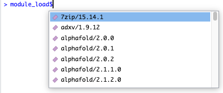
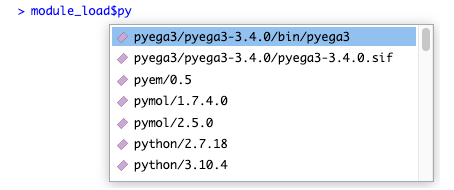

The EnvironmentModules package is an R front-end for the Environment Modules project, which offers a way to load and unload packages, and is commonly used on shared HPC (High Performance Computing) environments.
Setup
Currently EnvironmentModules is not on CRAN, so you will have to install it as follows:
remotes::install_github("WEHI-ResearchComputing/EnvironmentModules")Listing Modules
You can list the available modules:
module_avail()
#> [1] "7zip/15.14.1" "adxv/1.9.12" "alphafold/2.0.0"
#> [4] "alphafold/2.0.1" "alphafold/2.0.2" "alphafold/2.1.1.0"
#> [7] "alphafold/2.1.2.0" "alphafold/2.2.0.0" "anaconda3/2019.03"
#> [10] "anaconda3/2020.07" "anaconda3/4.0.0" "anaconda3/4.3.1"
#> [13] "anaconda3/latest" "annovar/2015-12-14" "apache-ant/1.9.7"
#> [16] "apptainer/1.0.0" "apptainer/1.1.0" "aspera/3.5.4"
#> [19] "aspera/3.9.1" "aspera/3.9.6" "autoPROC/20211020"
#> [22] "autoPROC/20220608" "autoPROC/20230222" "autoSHARP/2.8"
#> [25] "awscli/1.16py2.7" "awscli/1.16py3.7" "awscli/1.22.89"
#> [28] "awscli/2.1.25" "awscli/2.5.2" "axel/2.17.10"
#> [31] "bamtools/2.4.1" "bamUtil/1.0.14" "bazel/0.26.1"
#> [34] "bazel/1.2.1" "bcftools/1.12" "bcftools/1.13"
#> [37] "bcftools/1.14" "bcftools/1.15" "bcftools/1.16"
#> [40] "bcftools/1.17" "bcftools/1.3.1" "bcftools/1.6"
#> [43] "bcftools/1.7" "bcftools/1.9" "bcl-convert/3.10.5"
#> [46] "bcl-convert/3.9.3" "bcl2fastq/2.19.1" "bcl2fastq/2.20.0"
#> [49] "beast/1.8.3" "beast2/2.4.0" "bedops/2.4.26"
#> [52] "bedtools/2.25.0" "bedtools/2.26.0" "binutils/2.35.2-gcc-4.8.5"
#> [55] "binutils/2.35.2-gcc-9.1.0" "biobambam2/2.0.182-gcc9.1.0" "bismark/0.16.1"
#> [58] "bismark/0.19.0" "bismark/0.19.1" "bismark/0.20.0"
....You can also easily filter to only modules containing a substring:
module_avail("python")
#> [1] "python/2.7.18" "python/3.10.4" "python/3.5.1" "python/3.5.3" "python/3.6.5-intel" "python/3.7.0" "python/3.7.13"
#> [8] "python/3.8.3" "python/3.8.8" "python/3.9.5"Loading and Unloading Modules
Load modules using module_load()!
module_load("python/3")
#> ✔ Successfully loaded python/3If you’ve already loaded a module, you will be notified:
module_load("python/3")
#> ℹ Nothing to do. This module was probably already loaded. Use module_list() to verify.You can unload a module using the corresponding module_unload():
module_unload("python/3")
#> ✔ Successfully unloaded python/3Listing Loaded Modules
You can list modules that have been already loaded with module_list():
module_load("python/3")
#> ✔ Successfully loaded python/3
module_list()
#> [1] "python/3.8.8"Autocomplete
Both module_load and module_unload support a “magic” autocomplete that activates if you put a dollar sign after the function name.
For example, you can type module_load$ and the following will appear in RStudio:

This autocomplete will adjust as to type, to let you quickly filter down all the available modules:

To actually load the module, just press enter:
module_load$`python/3.7.13`
#> ✔ Successfully loaded python/3.7.13
#> [1] TRUELinking Shared Libraries
Although module_load() will add a module’s libraries to your LD_LIBRARY_PATH, which will allow you to compile packages against them, R will not necessarily be able to actually run packages that use these libraries.
For example, let’s say we want to use the hdf5r package, which depends on the hdf5 library package. We don’t have hdf5 loaded, so it will fail:
utils::install.packages("hdf5r", quiet=TRUE)
#> Warning in utils::install.packages("hdf5r", quiet = TRUE): installation of package 'hdf5r' had non-zero exit statusLet’s see what happens if we load the appropriate module. Firstly, we need to find out what the module is called:
module_avail("hdf5")
#> [1] "hdf5-mpich/1.10.5_3.3" "hdf5/1.10.5" "hdf5/1.12.1" "hdf5/1.12.2" "hdf5/1.8.16" "hdf5/1.8.20"
#> [7] "hdf5/1.8.21"We can now load the module:
module_load("hdf5/1.12.2")
#> ✔ Successfully loaded hdf5/1.12.2Now let’s try again:
utils::install.packages("hdf5r", quiet=TRUE)Finally, we can load the package itself… or can we?
library(hdf5r)
#> Error: package or namespace load failed for 'hdf5r' in dyn.load(file, DLLpath = DLLpath, ...):
#> unable to load shared object '/stornext/Home/data/allstaff/m/milton.m/R/x86_64-pc-linux-gnu-library/4.2/hdf5r/libs/hdf5r.so':
#> libhdf5_hl.so.200: cannot open shared object file: No such file or directoryAs alluded to above, R doesn’t actually load every new library that becomes available in the environment. Rather it uses “load-time linking”, which is where the libraries it links to are fixed at the time you start R. Now, you can resolve the above error by closing R, loading the module, and then restarting R, but this can be quite annoying.
Fortunately this package supports installing packages in a special way that hints to the package where to find the modules it needs. This means that you won’t have to restart R, or even load the modules the next time you want to use the package:
utils::install.packages("hdf5r", quiet=TRUE) |> with_module_install()It worked!
If you are interested in the theory underlying what is happening here, you might find Linux’s ld.so manual page interesting. Either run man ld.so on Linux, or visit this page: https://man7.org/linux/man-pages/man8/ld.so.8.html.
Specifically, this package uses the DT_RPATH approach to dependency resolution.
Other Commands
This package also supports the following.
module_swap() unloads the first module and loads the second:
module_swap("hdf5/1.12.2", "hdf5/1.10.5")module_purge() unloads all modules:
Advanced Commands
If you want to use a feature of Environment Modules that does not (yet) have a dedicated function, you can use the advanced functions get_module_code or get_module_output.
If you want to run a command that doesn’t edit the modules, but only shows output, run get_module_output
get_module_output(c("show", "hdf5"))------------------------------------------------------------------- /stornext/System/data/modulefiles/bioinf/its/hdf5/1.12.1: module-whatis {HDF5 is a unique technology suite that makes possible the management of extremely large and complex data collections. (v1.12.1)} conflict hdf5 prepend-path PATH /stornext/System/data/apps/hdf5/hdf5-1.12.1/bin prepend-path CPATH /stornext/System/data/apps/hdf5/hdf5-1.12.1/include prepend-path LD_LIBRARY_PATH /stornext/System/data/apps/hdf5/hdf5-1.12.1/lib prepend-path LIBRARY_PATH /stornext/System/data/apps/hdf5/hdf5-1.12.1/lib prepend-path MANPATH :/stornext/System/data/apps/hdf5/hdf5-1.12.1/share/man -------------------------------------------------------------------
If the module does edit the modules, use get_module_code(), and evaluate the result:
get_module_code("reload") |> eval()
#> NULLFAQ
Environment Modules supports loading modules in R since version 4.0.0! What is the point of this package?
This is true, and actually this package is just a wrapper around that core functionality. You need Modules version 4.0.0 or above to run this package. The main advantages of using this wrapper are the nicer function interfaces, nice documentation, and the ability to automatically “bake in” the modules to packages you install.
I’m getting the error “Could not detect an Environment Modules installation”, but I know that Environment Modules is installed on my system. What do I do?
First, in a bash terminal where the module command works correctly, run which modulecmd. Then in R, run Sys.setenv(MODULES_CMD="</path/to/modulecmd>"), putting the output from the previous step as the argument value. Then everything should work!